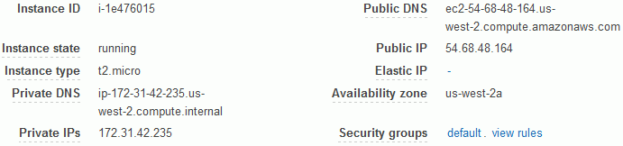
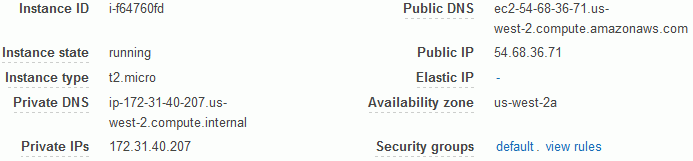
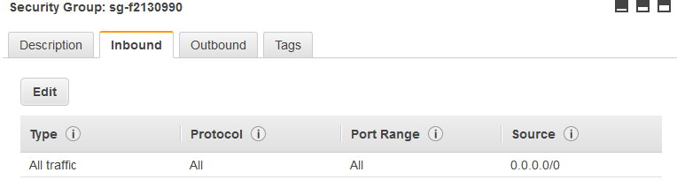
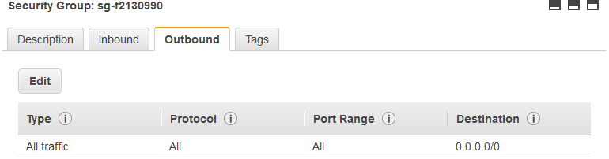
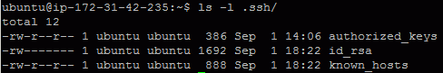
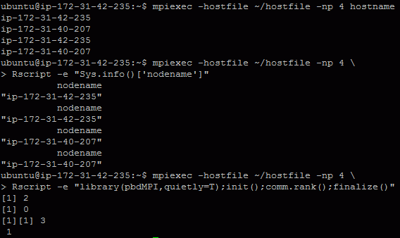

#### Amazon Elastic Compute Cloud
This is a summary to steup a cluster on AWS EC2. In short, the key points are
- Make sure pbdMPI is reinstalled with openMPI correctly on all nodes.
- Make sure firewalls of all nodes are open to all for sending to and
receiving from all.
- Make sure all nodes can access the same R file.
---
#### Very Long Steps:
1. For example, I have two instances of t2.micro running on us-west-2a.
Both instances run Ubuntu image provided by AWS EC2.
They have public IPs
<code>54.68.48.164</code>
and
<code>54.68.36.71</code>, while
they also have private DNSs
<code>ip-172-31-42-235</code>
and
<code>ip-172-31-40-207</code>, respectively.
All instances are in a <code>default</code> security group.
The next figures show what they should be.
<table>
<tbody>
<tr class="success">
<td>
</img>
<br>
</img>
</td>
</tr>
</tbody>
</table>
2. All instances are changed in <code>default</code> security groups
(under NETWORK & SECURITY on the left hand side menu) where
I set both <code>Inbund</code> and <code>Outbund</code> rules to
- Type: All traffic
- Protocal: All
- Port Range: 0 - 65536
- Source/Destination: Anywhere </br>
<font color="red">
This is a risky change. It is suggested to allow private IPs only.
Please consulting with Network Professional.</font>
<br>
This is make sure <code>MPI</code> can access among instances and via
whatever ports are needed.
The next figures show what they should be.
<table>
<tbody>
<tr class="success">
<td>
</img>
<br>
</img>
</td>
</tr>
</tbody>
</table>
- Disable all other network interfaces. Keep routing path as simple as possible.
e.g. One may do below in Ubuntu/Xubuntu
```
sudo ifconfig enp0s3 down
sudo ifconfig docker0 down
```
where `enp0s3` and `docker0` are the network interface names.
- Disable firewalls if possible. e.g. One may do below in Ubuntu/Xubuntu
```
SHELL> sudo ufw disable
```
3. All instances should have files
- ~/.ssh/authorized_keys
- ~/.ssh/id_rsa
- ~/.ssh/known_hosts
that allows both instances can <code>ssh</code> and login with each other
without typing further user name and password.
Note that <code>MPI</code> is in a batch mode which does not allowing
any interruption.
The next figure shows what it should be.
<br>
</img>
<br>
Note that <code>known_hosts</code> can be generated via
```
SHELL> ssh ip-172-31-42-235
SHELL> ssh ip-172-31-40-207
```
Add more instances if you have more.
<font color="red">
Note that all instances should have access to all other instances.
</font>
You may need some shell scripts to help with this setup. Or,
you may change <code>/etc/ssh/ssh_config</code> to avoid checking and this
step.
<br><br>
4. (Optional) All instances should have the file <code>~/work-my/00_set_devel_R</code>
containing
```
export MAKE="/usr/bin/make -j 4"
export R_DEVEL=/home/ubuntu/work-my/local/R-devel
export OMPI=/home/ubuntu/work-my/local/ompi
export PATH=$R_DEVEL/bin:$OMPI/bin:$PATH
export LD_LIBRARY_PATH=$R_DEVEL/lib/R/lib:$OMPI/lib:$LD_LIBRARY_PATH
alias mpiexec=/home/ubuntu/work-my/local/ompi/bin/mpiexec
alias mpirun=/home/ubuntu/work-my/local/ompi/bin/mpirun
alias Rscript=/home/ubuntu/work-my/local/R-devel/bin/Rscript
```
<font color="red">
You may adjust the path according to the system.
</font>
This is to set the executable and library paths to <code>R</code> and
<code>OpenMPI</code>. The alias is to avoid typing full path to
<code>mpiexec</code> or <code>mpirun</code>.
<br><br>
5. (Optional) All instances should have the following line in the file <code>~/.bashrc</code>
```
. /home/ubuntu/work-my/00_set_devel_R
```
This is to make sure the working environment is consistent on every instance
after <code>ssh</code> login.
<br><br>
6. All instances should install <code>OpenMPI</code>, <code>R</code>, and
<code>pbdMPI</code> and their dependences as next.
```
SHELL> sudo apt-get update
SHELL> sudo apt-get install libopenmpi-dev openmpi-bin
SHELL> sudo apt-get install r-base
SHELL> sudo R CMD INSTALL rlecuyer_0.3-3.tar.gz
SHELL> sudo R CMD INSTALL pbdMPI_0.2-5.tar.gz
```
7. <font color="red">Login</font>
instance, say <code>ip-172-31-42-235</code>
should have the following lines in the file
<code>~/hostfile</code> to let <code>MPI</code> knows which
machines are available to launch applications either in SPMD.
```
ip-172-31-42-235
ip-172-31-40-207
```
Add more instances if you have more and
see OpenMPI website for more examples of this file.
<br><br>
8. In the
<font color="red">login</font>
instance, you may
test <code>hostname</code>, <code>R</code>, and <code>pbdMPI</code>
in <code>4</code> processors as next.
```
SHELL> mpiexec -hostfile ~/hostfile -np 4 hostname
SHELL> mpiexec -hostfile ~/hostfile -np 4 \
Rscript -e "Sys.info()['nodename']"
SHELL> mpiexec -hostfile ~/hostfile -np 4 \
Rscript -e "library(pbdMPI,quietly=T);init();comm.rank();finalize()"
```
Note: Full paths to the `mpiexec` and `Rscript` may be needed.
When everything is right, the outputs should be as next if all setups
are correct.
<br>
</img>
<br>
---
<div w3-include-html="./preamble_tail_date.html"></div>